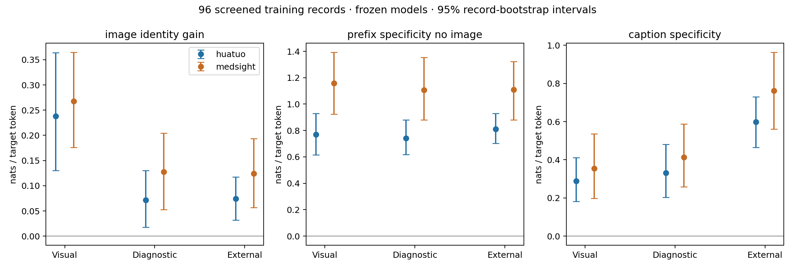

Prepared October 18, 2026. Local source audit plus frozen HuatuoGPT-Vision-7B and MedSIGHT-Comp experiments. No weights were updated.
Both models show lower image identity gain and higher caption specificity for externally screened targets than visual-description controls; prefix specificity does not separate these groups in this pilot. The external-minus-visual source-over-image contrast is 0.473 [0.267, 0.685] nats/token for Huatuo and 0.551 [0.277, 0.812] for MedSIGHT. These are within-model contrasts; absolute likelihood scales should not be used to rank the two models.
Source-dependent supervision is a concrete and measurable audit target. Explicit biopsy-event and patient-history examples provide stronger structural evidence than low image sensitivity alone. The most promising proposed measurement is therefore an evidence-provenance profile attached to each supervised claim. Prefix sensitivity is useful as a control but is not supported as a standalone mismatch discriminator. No verified population mismatch rate, no evidence that this training data caused the model behavior, no general model ranking, and no validated mismatch detector.
The complete 646,759-record instruction corpus and the supplied 60,000-record subset were screened. The model pilot contains 96 distinct single-image records: 16 in each combination of two membership strata (60k subset / remainder) and three target-sentence groups (visual description, diagnostic inference, external context). Both models score the same records. Selection is seeded and independent of model scores, balanced between the recorded CT and MRI modalities. This is an enriched pilot, not a random estimate of mismatch prevalence.
Each target receives 14 conditions per model: correct image, two different images with the same recorded modality and body part, a gray image, or no image, each with and without preceding answer sentences; plus a donor answer-prefix control with the correct image and with no image, and true source caption and donor source caption with the correct image and no preceding answer. Donor prefixes come from a different selected record in the same screening category and recorded modality, chosen by nearest word count; they are not exactly token-length matched. Total: 2,688 scored target-condition pairs. A target is always the same token sequence within a model. Only its tokens contribute to its score. Source captions are introduced as additional user context.
Huatuo uses the local 7B LLaVA/Qwen2 checkpoint. MedSIGHT uses Caf0914/MedSIGHT-Comp, the comprehension checkpoint in MedProbe, with its huatuo template. This does not test the region-token/segmentation variant. Checkpoint locations, model configs, library versions, MedProbe commit, corpus hashes, and selected IDs are saved alongside results. The two local copies of the 60k corpus have matching IDs and conversations; their image path prefixes differ.
Let ℓ(I,Q,A<j; Cj) be the average log probability of target sentence Cj, optionally conditioned on preceding supervised answer sentences A<j. These are nats per target token, not calibrated probabilities that a medical claim is true.
| Measurement | Definition | Interpretation / limitation |
|---|---|---|
| Image identity gain, V | ℓ(correct image,Q;C) − mean ℓ(matched donor image,Q;C) | Does the particular image support the target more than other images of the same recorded anatomy and modality? Zero can reflect missing evidence, poor perception, generic language, or question cues. |
| Answer-prefix dependence, P | ℓ(no image,Q,A<j;C) − ℓ(no image,Q;C) | How much can preceding supervision explain the target without pixels? This is normal discourse predictability unless independently linked to unsupported premises. |
| Prefix specificity | ℓ(no image,Q,true preceding answer;C) − ℓ(no image,Q,donor preceding answer;C) | Controls approximately for discourse and prefix length. Still sensitive to pronoun resolution and ordinary answer coherence, so it is not a hallucination measure. |
| Prefix–image interaction, J | V with preceding answer − V without preceding answer | A negative value indicates preceding answer sentences reduce the measured contribution of image identity. It is a candidate mechanism, not proof that training caused hallucinations. |
| Source-context specificity, R | ℓ(correct image,Q,true caption;C) − ℓ(correct image,Q,donor caption;C) | Tests whether privileged source context helps. Captions may directly reveal the target, so this is an information-release control, not independent clinical verification. |
| Source-over-image contrast | R − V | Ranks targets that respond more strongly to source text than to image identity. Keep the components separate; no universal threshold has been validated. |
| Image retrieval check | Rank true image among itself and two donors using target likelihood | Chance is 1/3 only under exchangeability. Donors can share pathology and metadata can be wrong; this is a coarse specificity check. |
| Corpus | Records | Answer marker, category absent from question | Screening rate |
|---|---|---|---|
| full | 646,759 | 48,543 | 7.51% |
| medsight_60k | 60,000 | 4,592 | 7.65% |
The corpus counts are regex screening rates, not verified mismatch rates. A marker category in an answer but absent from the question can still describe information visible in the image, an explanation, or an appropriate inference. The filters are non-exhaustive and do not check pixels or paraphrased question context. Categories overlap. Exact pattern strings and category counts are in audit.json.
Recorded modality labels are noisy: inspection found radiographs and mixed histology/radiology montages under CT/MRI metadata. Donors are matched on supplied metadata, not on clinically verified image content. A “single image” means one file and may contain multiple panels. All 96 target images have distinct decoded-pixel hashes, and each has two pixel-distinct donors.
| Corpus | Answer contains numeric age | Answer age absent question | Same age in source caption, absent question |
|---|---|---|---|
| full | 1,553 | 1,376 | 993 |
| medsight_60k | 150 | 128 | 88 |
Here a numeric age occurs in both the original caption and supervised answer, but not in the question. This is direct evidence of a source-only textual information path. It is not automatically a mismatch: scanner overlays, patient identity, approximate-age questions, and hypothetical examples need checking. Numeric values are compared exactly; spelling and paraphrase matching are not attempted.

huatuo, external-context targets: image identity gain 0.074 [0.032, 0.117], preceding-answer benefit without any image 0.803 [0.705, 0.910], and true-versus-donor-caption benefit 0.598 [0.465, 0.730] nats/token.
medsight, external-context targets: image identity gain 0.124 [0.057, 0.193], preceding-answer benefit without any image 1.242 [1.018, 1.487], and true-versus-donor-caption benefit 0.762 [0.561, 0.964] nats/token.
All table intervals use 5,000 record-bootstrap draws. Category contrasts use within-membership-stratum resampling. They are exploratory pointwise intervals without multiplicity correction. Records, rather than tokens or perturbation runs, are the sampling units. No patient/article identifiers are supplied here, so independence across source articles is not guaranteed.
| Model / group | n | Image identity gain | True − donor prefix, no image | Caption specificity | Image rank top-1 |
|---|---|---|---|---|---|
| huatuo / visual_description | 32 | 0.238 [0.130, 0.364] | 0.769 [0.616, 0.929] | 0.289 [0.182, 0.412] | 0.719 [0.562, 0.875] |
| huatuo / diagnostic_inference | 32 | 0.071 [0.018, 0.130] | 0.742 [0.617, 0.882] | 0.332 [0.203, 0.482] | 0.531 [0.375, 0.719] |
| huatuo / external_context | 32 | 0.074 [0.032, 0.117] | 0.812 [0.703, 0.928] | 0.598 [0.465, 0.730] | 0.625 [0.469, 0.781] |
| medsight / visual_description | 32 | 0.268 [0.176, 0.365] | 1.158 [0.924, 1.393] | 0.354 [0.198, 0.537] | 0.719 [0.562, 0.875] |
| medsight / diagnostic_inference | 32 | 0.128 [0.053, 0.205] | 1.108 [0.881, 1.353] | 0.413 [0.259, 0.588] | 0.562 [0.406, 0.719] |
| medsight / external_context | 32 | 0.124 [0.057, 0.193] | 1.109 [0.881, 1.323] | 0.762 [0.561, 0.964] | 0.625 [0.469, 0.781] |
| Model / group | n | Image identity gain | True − donor prefix, no image | Caption specificity | Image rank top-1 |
|---|---|---|---|---|---|
| huatuo / visual_description | 16 | 0.291 [0.109, 0.521] | 0.719 [0.531, 0.917] | 0.282 [0.153, 0.411] | 0.688 [0.438, 0.875] |
| huatuo / diagnostic_inference | 16 | 0.072 [0.011, 0.167] | 0.892 [0.716, 1.087] | 0.386 [0.168, 0.668] | 0.500 [0.250, 0.750] |
| huatuo / external_context | 16 | 0.056 [-0.008, 0.113] | 0.910 [0.759, 1.073] | 0.462 [0.286, 0.661] | 0.562 [0.312, 0.812] |
| medsight / visual_description | 16 | 0.376 [0.240, 0.522] | 1.321 [0.985, 1.669] | 0.285 [0.132, 0.445] | 0.875 [0.688, 1.000] |
| medsight / diagnostic_inference | 16 | 0.129 [0.021, 0.264] | 1.513 [1.185, 1.864] | 0.459 [0.212, 0.761] | 0.500 [0.250, 0.750] |
| medsight / external_context | 16 | 0.125 [0.015, 0.237] | 1.559 [1.390, 1.729] | 0.550 [0.298, 0.825] | 0.562 [0.312, 0.812] |
| Model / group | n | Image identity gain | True − donor prefix, no image | Caption specificity | Image rank top-1 |
|---|---|---|---|---|---|
| huatuo / visual_description | 16 | 0.185 [0.085, 0.303] | 0.820 [0.577, 1.061] | 0.296 [0.125, 0.507] | 0.750 [0.562, 0.938] |
| huatuo / diagnostic_inference | 16 | 0.070 [-0.015, 0.153] | 0.592 [0.442, 0.748] | 0.278 [0.156, 0.416] | 0.562 [0.312, 0.812] |
| huatuo / external_context | 16 | 0.093 [0.039, 0.158] | 0.713 [0.567, 0.866] | 0.734 [0.576, 0.884] | 0.688 [0.438, 0.875] |
| medsight / visual_description | 16 | 0.159 [0.057, 0.271] | 0.996 [0.677, 1.312] | 0.424 [0.157, 0.734] | 0.562 [0.312, 0.812] |
| medsight / diagnostic_inference | 16 | 0.127 [0.029, 0.220] | 0.703 [0.505, 0.887] | 0.367 [0.202, 0.569] | 0.625 [0.375, 0.875] |
| medsight / external_context | 16 | 0.123 [0.032, 0.214] | 0.658 [0.404, 0.906] | 0.974 [0.708, 1.240] | 0.688 [0.438, 0.875] |
| Model | Metric | External − visual mean [95% CI] |
|---|---|---|
| huatuo | image_identity_gain | -0.163 [-0.289, -0.051] |
| huatuo | caption_specificity | 0.309 [0.136, 0.480] |
| huatuo | source_over_image | 0.473 [0.267, 0.685] |
| huatuo | prefix_gain_no_image | 0.063 [-0.113, 0.241] |
| huatuo | prefix_specificity_no_image | 0.042 [-0.153, 0.228] |
| huatuo | prefix_image_interaction | 0.021 [-0.039, 0.081] |
| medsight | image_identity_gain | -0.144 [-0.257, -0.031] |
| medsight | caption_specificity | 0.408 [0.157, 0.658] |
| medsight | source_over_image | 0.551 [0.277, 0.812] |
| medsight | prefix_gain_no_image | 0.042 [-0.257, 0.336] |
| medsight | prefix_specificity_no_image | -0.050 [-0.320, 0.220] |
| medsight | prefix_image_interaction | 0.013 [-0.093, 0.114] |
A category contrast whose interval spans zero does not support a directional group difference in this pilot. Category-level effects must be interpreted alongside sentence position, length, lexical overlap, question specificity, and source-caption informativeness. The membership comparison is descriptive: full-only does not mean unseen by MedSIGHT, because its alignment corpus and other pretraining exposures can overlap.
Before inspecting model contrasts, the assistant reviewed all 32 external-screen target texts, captions, and image contact sheets. Twelve cases contain explicit ages, clinical-history facts, treatment histories, renal-function status, or biopsy/histopathology events that the supplied question does not state and the displayed radiology figure does not visibly document. This is a structural review, not a clinical adjudication or exhaustive OCR examination. The selected fact spans are saved in fact_spans.json. At least four original screening flags are clear false positives or already supplied evidence; these remain in the primary results for transparency.
| Model / score scope | n | Image identity gain | True − donor prefix, no image | Caption specificity |
|---|---|---|---|---|
| huatuo / full_sentence | 12 | 0.089 [0.031, 0.155] | 0.873 [0.721, 1.028] | 0.710 [0.553, 0.856] |
| huatuo / fact_span | 12 | 0.120 [0.055, 0.193] | 0.408 [0.273, 0.547] | 1.552 [1.278, 1.852] |
| medsight / full_sentence | 12 | 0.145 [0.021, 0.261] | 1.261 [1.000, 1.530] | 0.907 [0.650, 1.182] |
| medsight / fact_span | 12 | 0.333 [0.063, 0.691] | 1.357 [0.899, 1.917] | 1.910 [1.333, 2.578] |
The fact-span analysis uses the same recorded forward passes and scores only tokens overlapping the inspected factual phrase. It still conditions on earlier tokens within that target sentence. Thus it reduces dilution by generic prose but does not remove all autoregressive answer leakage. The selected set is too small to validate a detector. Some clinical histories may be probabilistically inferred; our concern is presentation as known patient-specific facts.
A concrete source-provenance example is Instruction-Tuning_141171: the question asks for the likely diagnosis from a CT image, while the target additionally asserts that a CT-guided biopsy was performed and histology confirmed non-small-cell adenocarcinoma. The caption supplies that event, but the input is a single chest CT image. Distinguish predicting a diagnosis from asserting knowledge of an unprovided test result. A second example, Instruction-Tuning_422538, supplies a breast MRI and an answer stating that biopsy results confirm the diagnosis; the biopsy information is in the caption.
Simple image removal, corruption, region masking, and claim verification are established approaches. MedVIGIL already tests broken medical visual evidence; CoEV verifies individual claims against visual evidence; TLVS studies token-level visual sensitivity. The candidate contribution here is the joint source-provenance and supervision-prefix audit of training targets, with an explicit distinction between missing evidence and failed perception. This is a positioning hypothesis, not an exhaustive novelty claim.
The HuatuoGPT-Vision paper describes using GPT-4V with source information to construct PubMedVision. That makes the source-to-target information path a relevant audit target; it does not imply the dataset is generally defective.
| Candidate experiment | Training-free design | Status / what it establishes |
|---|---|---|
| Evidence demand versus supply ledger | Assign each atomic target claim a required evidence type: image, clinical history, previous study, pathology, molecular test, or general medical knowledge. Compare to the actual supplied evidence inventory. | Automated lexical screen executed. Expert-adjudicated evidence contracts remain necessary for precision and recall. |
| Source–image–prefix decomposition | Cross image identity with preceding-answer availability, then release true or irrelevant source context. | Executed. Measures competing information sources without changing weights. |
| Missing-evidence crossover | For an adjudicated radiology target requiring pathology or history, provide the missing evidence, then replace it with a matched conflicting result. Test whether the diagnostic preference changes appropriately. | Caption-release proxy executed. A clean test needs non-answer-copying evidence and plausible, reviewed alternative diagnoses. |
| Minimum sufficient evidence frontier | Reveal image panels, sequences, history, and pathology one at a time. Measure the first stage where the target is both identifiable to experts and preferred by the model. | Proposed. Separates a supervision target stated too early from a model that fails despite adequate evidence. |
| Specificity debt | For the same case, compare verified morphology, diagnosis family, exact subtype, and molecular identity. Score evidence gains at each level using length-matched contrastive alternatives. | Proposed. More informative than raw answer likelihood; needs expert-vetted alternatives to avoid false specificity labels. |
| Premise inheritance | Replace one evidence-critical premise in the answer prefix with a plausible contradictory premise while holding image and subsequent target fixed; include equally long neutral-prefix controls. | Proposed. Tests whether a rationale inherits textual premises rather than checking the image. Prefix deletion alone is insufficient. |
| Perception-versus-availability triangulation | For low-V targets compare full-resolution crops, expert localized findings, and missing nonvisual evidence. Use independent experts or an independent model rather than self-judging. | Proposed. Image rescue favors a perception explanation; pathology/history rescue with no available image discriminator favors evidence mismatch. |
| Training-free target repair audit | Remove unsupported patient facts, change certainty to a justified differential, or add the missing context. Blindly evaluate target correctness, evidence sufficiency, and specificity with experts. | Proposed. Can validate a data-cleaning intervention without retraining; downstream training benefit cannot be claimed from it. |
This experiment cannot establish that the training objective caused a behavior, that a particular diagnosis is wrong, or that clinicians could not infer it. It measures frozen-model dependencies on deliberately selected source targets. Low image dependence has several explanations; high source-context dependence can be ordinary answer leakage; high preceding-answer dependence can be ordinary coherence. Agreement between two models is not independent clinical ground truth. Neither model generates free responses in the main pilot, so answer accuracy, hallucination rate, and abstention behavior are not measured.
The next decisive study is a blinded audit of about 100–200 cases with two clinical reviewers. Label each claim as visible, supplied in the question, inferentially supported but nonspecific, dependent on missing evidence, or unverifiable. Review complete panels and image text. Predefine a high-confidence subset with clearly absent required evidence, and a matched visible-evidence control subset. Then test whether the measured source/prefix-versus-image contrasts discriminate those labels. Only after this should an aggregate “mismatch score” or a broad dataset prevalence be reported.
Question: How serious was the condition shown in the image initially, and what does this scan tell us about the patient's current health status?
Target: The image we are observing is a 24-month follow-up CTA scan, which shows that the LSCA remains unobstructed, and the false lumen, associated with aortic dissections, has been successfully excluded.
Preceding answer: Initially, the patient had a thoracic aortic dissection which involved the left subclavian artery, a serious condition that can potentially lead to life-threatening complications.
Original caption: Patency of the LSCA was followed-up in a patient receiving the MCPF technique. (A) Preoperative CTA showed that a patient suffered from thoracic aortic dissection, which involved the LSCA. (B) Intraoperative aortogram demonstrated that the LSCA was revascularized and false lumen was excluded. (C) Before discharge, CTA was conducted to confirm the patency of the LSCA and exclusion of false lumen. (D) CTA at follow-up of 6 months. (E) CTA at follow-up of 12 months. (F) CTA at follow-up of 24 months. LSCA, left subclavian artery; MCPF, mini-cross prefenestration; CTA, CT angiography.
Screening match: {'outcome': 'follow-up CTA scan, which shows'}
Image: /data/aofei/Medical_datasets/PubMedVision/images_all/pmc_220158_0.jpg
huatuo: image gain 0.079; prefix gain without image 0.432; caption specificity 0.887.
medsight: image gain 0.110; prefix gain without image 0.317; caption specificity 1.044.
Question: Based on the CMR image provided, can you identify and describe the areas where perfusion defects are most apparent? What might be the implications of these findings for the patient's condition, particularly in relation to their known coronary artery disease?
Target: Given the patient’s history of coronary artery disease and typical angina pectoris, the perfusion defects likely correlate with regions of myocardial injury or severe arterial blockages that impair blood flow.
Preceding answer: In the CMR image, the perfusion defects are primarily seen in the septal and inferoseptal segments of the myocardium, where the tissue appears significantly darker compared to the surrounding areas. These defects might indicate areas of reduced blood flow, typically associated with ischemia or scarring from previous ischemic events.
Original caption: CMR Perfusion without vs. with caffeine. Adenosine stress cardiovascular magnetic resonance (CMR) images (basal, mid-ventricular and apical slices) without intake of caffeine (a) and the corresponding images after intake of 200 mg caffeine 1 h prior a repeat adenosine stress CMR (b) of a 85-year old male with known coronary artery disease (CAD) and typical angina pectoris demonstrating a perfusion defect in septal, inferoseptal and inferior segments (9 out of 16 segments) which seems to be larger without caffeine (a) than after intake of caffeine (b). LGE images revealed no late gadolinium enhancement (LGE) (c). Coronary angiography demonstrated severe stenosis of a) the proximal part of the left anterior descending coronary artery and b) of the mid segment of the right coronary artery, matching the results of (both) adenosine CMR stress perfusions
Screening match: {'history': 'history of', 'reference': 'patient’s history'}
Image: /data/aofei/Medical_datasets/PubMedVision/images_all/pmc_240720_0.jpg
huatuo: image gain -0.001; prefix gain without image 0.556; caption specificity 0.275.
medsight: image gain -0.169; prefix gain without image 0.494; caption specificity 0.285.
Question: What is the previous location of the cyst shown in the CT scans?
Target: The reference states that the three-month follow-up brain CT scan revealed the acceptable aeration of the right sphenoid sinus and the previous location of the cyst, as indicated in Figure 4.
Preceding answer: According to the reference information provided, the previous location of the cyst is clearly shown in the follow-up brain CT scans.
Original caption: Axial CT scan shows acceptable aeration of right sphenoid sinus and previous location of the cyst.
Screening match: {'outcome': 'follow-up brain CT scan revealed'}
Image: /data/aofei/Medical_datasets/PubMedVision/images_all/pmc_542571_0.jpg
huatuo: image gain 0.114; prefix gain without image 0.488; caption specificity 0.413.
medsight: image gain 0.054; prefix gain without image 0.527; caption specificity 1.214.
Question: What does this MRI result mean for my knee health, and is there any specific treatment needed?
Target: For the right knee (31-year-old woman), there's been some improvement in the edema but not a complete return to the initial state before the marathon.
Preceding answer: The MRI scans show bone marrow edema-like changes in the patella area of the knee, which is often seen after increased physical activity, such as running a marathon.
Original caption: Axial proton-density fat-saturated MR images of two different knees that showed reversibility at 6-month follow-up (MRI 3) in the extent of subchondral bone marrow oedema-like signal of the patella that previously developed from the pre-marathon scan to the 2 weeks post-marathon scan (MRI 1 to MRI 2): A) reversibility but not to the MRI 1 grading status, in the right knee of a 31-year old woman; B) complete resolution to the MRI 1 grading status, in the left knee of a 34-year-old woman. Bone marrow oedema-like signal is indicated by arrows and the lesion grade (G) is included in the left bottom corner and is defined in the KOSS scoring system [18] (see Table 2); KOSS, Knee Osteoarthritis Scoring System
Screening match: {'age': '31-year-old'}
Image: /data/aofei/Medical_datasets/PubMedVision/images_all/pmc_394494_0.jpg
huatuo: image gain 0.103; prefix gain without image 0.560; caption specificity 1.174.
medsight: image gain 0.431; prefix gain without image 0.895; caption specificity 1.911.
Question: Doctor, I see that there is very less bone in my sinus from the x-ray. How can an implant be placed there? Is it safe and will it last?
Target: The follow-up x-rays we take can confirm whether the new bone is adequate for implant placement.
Preceding answer: It's an excellent observation from the x-ray, and your concerns are absolutely valid. The image indeed shows that the residual bone height in the sinus area is initially insufficient to support an implant directly. However, this is a common situation, and we have a specialized procedure called 'sinus floor elevation' to address this. During this procedure, we carefully lift the sinus membrane and place a bone graft material beneath it, which helps in generating new bone over time. After the bone has sufficiently regenerated, which typically takes about six months, it becomes possible to safely place an implant that is stable and durable.
Original caption: PLGA group. (a) Magnification of panoramic radiograph of left sinus showing a residual bone height insufficient to implant positioning; (b) periapical X-ray of the same site of (a) immediately after sinus floor elevation surgery; (c) periapical X-ray of the same site of (a) six month after sinus floor elevation surgery; (d) periapical X-ray after implant positioning in the new-formed bone.
Screening match: {'outcome': 'follow-up x-rays we take can confirm'}
Image: /data/aofei/Medical_datasets/PubMedVision/images_all/pmc_239276_0.jpg
huatuo: image gain -0.000; prefix gain without image 0.877; caption specificity 0.318.
medsight: image gain 0.062; prefix gain without image 1.048; caption specificity 0.603.
Question: Can you describe the findings in these MRI images related to the pituitary tumor?
Target: Follow-up images reveal a notable reduction in tumor size without evidence of pituitary apoplexy, hemorrhage, or ischemic changes.
Preceding answer: The MRI images show a substantial pituitary tumor measuring 77 x 63 x 85 mm, extending bilaterally through the anterior skull base and involving the clivus and cavernous sinus. There is significant compression of the optic chiasm and the bilateral frontal and temporal lobes.
Original caption: Magnetic resonance imaging (MRI) revealed a 77 × 63 × 85-mm tumor that arose from the pituitary and extended bilaterally through the anterior skull base, the clivus, and the cavernous sinus, with compression of the optic chiasm and the bilateral frontal and temporal lobes (Figs. 1 and 3a–c). MRI revealed significant reduction of the tumor in a short period without pituitary apoplexy, including hemorrhagic or ischemic change (Figs. 2 and 3c, e, f). Further, a hyperintense area in left frontal lobe appeared on T2 -weighted images (Fig. 3).
Screening match: {'outcome': 'Follow-up images reveal'}
Image: /data/aofei/Medical_datasets/PubMedVision/images_all/pmc_584022_0.jpg
huatuo: image gain -0.003; prefix gain without image 0.576; caption specificity 0.624.
medsight: image gain 0.138; prefix gain without image 0.363; caption specificity 0.972.
Question: What do the CT scan findings indicate about the patient's condition?
Target: The follow-up scan on hospital day 11 shows that the fluid collection has disappeared and there are no cystic changes, which indicates the pancreatitis has likely resolved or is improving with treatment.
Preceding answer: The initial CT scan shows increased density of the adipose tissue around the head of the pancreas and a fluid collection, but no swelling of the pancreas. This suggests the patient may be experiencing some form of pancreatitis or inflammation of the pancreas.
Original caption: Enhanced abdominal CT scan findings. (A) Enhanced abdominal CT on admission. Around the head of the pancreas, the density of the adipose tissue was increased. There was a fluid collection but no swelling of the pancreas (arrow). (B) Abdominal CT on hospital day 11. The fluid collection has disappeared and there were no cystic changes in the pancreas.
Screening match: {'outcome': 'follow-up scan on hospital day 11 shows'}
Image: /data/aofei/Medical_datasets/PubMedVision/images_all/pmc_626950_0.jpg
huatuo: image gain 0.058; prefix gain without image 0.900; caption specificity 0.976.
medsight: image gain 0.214; prefix gain without image 0.946; caption specificity 0.972.
Question: What is the abnormal finding seen in this MRI image of the knee?
Target: This is characteristic of a condition called physeal osteochondrosis (FOPE), which is a common cause of atraumatic, activity-associated knee pain in skeletally immature individuals like the 12-year-old female patient presented here.
Preceding answer: The abnormal finding in this MRI image is a 'starburst' pattern of edema around the closing physis, extending into both the metaphysis and epiphysis.
Original caption: Sagittal T2-weighted MRI image through the knee of a 12-year-old skeletally immature female who presented with atraumatic, activity-associated knee pain. The arrow points to the characteristic “starburst” pattern of edema about the closing physis, extending into both the metaphysis and epiphysis.
Screening match: {'age': '12-year-old'}
Image: /data/aofei/Medical_datasets/PubMedVision/images_all/pmc_430854_0.jpg
huatuo: image gain 0.046; prefix gain without image 0.606; caption specificity 1.015.
medsight: image gain -0.027; prefix gain without image 0.331; caption specificity 1.012.
Question: Can you explain what these images show regarding the condition and treatment progress?
Target: However, the follow-up images taken 24 weeks after the infusion of cord blood show a significant improvement in blood flow to this area.
Preceding answer: Certainly. The images show a brain perfusion SPECT analysis focusing on the left thalamus. In the initial images, there's an area with low blood flow, which is concerning as it can affect brain function.
Original caption: Brain perfusion SPECT analysis. The low perfusion in the left thalamus in the baseline study (white arrow, upper lane), has been corrected in subsequent images at 24 weeks (white arrow, lower lane) after infusion of cord blood.
Screening match: {'outcome': 'follow-up images taken 24 weeks after the infusion of cord blood show'}
Image: /data/aofei/Medical_datasets/PubMedVision/images_all/pmc_411746_0.jpg
huatuo: image gain 0.420; prefix gain without image 1.248; caption specificity 1.276.
medsight: image gain 0.245; prefix gain without image 1.863; caption specificity 1.827.
Question: What does the high uptake of 68Ga-pentixafor in the PET scan indicate?
Target: In the context of a patient with a history of recurrent urinary tract infections and kidney transplantation, this pattern is suggestive of an acute renal allograft infection.
Preceding answer: The high uptake of 68Ga-pentixafor in the PET scan typically indicates an increased expression of the CXCR4 receptor, which is associated with inflammation and potentially infection.
Original caption: Magnetic resonance imaging (MRI) and CXCR4-positron emission tomography (PET) imaging of acute renal allograft infection.Diffusion-weighted MRI and PET imaging with a specific CXCR4 ligand ( 68Ga-pentixafor) were used to image the kidney of a patient with recurrent urinary tract infection after kidney transplantation. The upper row shows apparent diffusion coefficient (ADC) maps of the kidney (top, frontal views from posterior to anterior), and the bottom row shows 68Ga-pentixafor PET imaging. Areas of reduced ADC corresponded to foci with upregulated CXCR4 expression (arrows). T2-weighted MRI and maximum-intensity-projection PET are shown for anatomic orientation. The kidney allograft is located in the right lower abdomen. The spleen displays high CXCR4 expression due to high content of leukocytes. Reproduced with permission from Derlin et al. 70. SUV, standardized uptake value.
Screening match: {'history': 'history of'}
Image: /data/aofei/Medical_datasets/PubMedVision/images_all/pmc_294756_0.jpg
huatuo: image gain -0.061; prefix gain without image 0.728; caption specificity 1.025.
medsight: image gain 0.146; prefix gain without image 1.363; caption specificity 1.466.
Question: What surgical procedure did the patient undergo based on the information in the image?
Target: The reference text also confirms that the follow-up imaging at 3 months showed successful exclusion of the aneurysm, without any deterioration in renal function, suggesting the surgical intervention was successful.
Preceding answer: Based on the information provided in the image and the reference text, the patient has undergone a surgical procedure to address an abdominal aortic aneurysm. The three-dimensional volume-rendered CT scan shows patent visceral grafts, indicating that the patient has undergone a surgical intervention to exclude the aneurysm and maintain blood flow to the vital organs in the abdomen.
Original caption: A 3-month follow-up three-dimensional volume-rendered computed tomography scan confirms patent visceral grafts without any deterioration of renal function and successful exclusion of the aneurysm.
Screening match: {'outcome': 'follow-up imaging at 3 months showed', 'reference': 'reference text'}
Image: /data/aofei/Medical_datasets/PubMedVision/images_all/pmc_421261_0.jpg
huatuo: image gain 0.178; prefix gain without image 0.932; caption specificity 0.604.
medsight: image gain 0.439; prefix gain without image 1.052; caption specificity 0.422.
Question: What type of brain tumor is shown in the image?
Target: This can be determined from the reference information provided, which states that the patient is a 55-year-old male with a right temporal GBM.
Preceding answer: The image shows a right temporal glioblastoma multiforme (GBM), which is a type of high-grade brain tumor.
Original caption: Volumetric brain tumor mapping of FLAIR, Necrosis, and Contrast Enhancement.A 55 year old male patient with a right temporal GBM. (a) Axial FLAIR image demonstrates segmentation (in blue) of the region of FLAIR hyperintensity corresponding to the area of edema/tumor infiltration. Notice the segmented enhancement (yellow) and necrosis (orange) that has been segmented on the T1WI post- contrast. (b) The segmented edema/tumor infiltration (blue), enhancement (yellow) and necrosis (orange) are seen overlaid on a base post- contrast T1WI. (c) Axial post-contrast enhanced T1WI demonstrates the segmentation of the enhancement (yellow) and necrosis (orange).
Screening match: {'age': '55-year-old', 'reference': 'reference information'}
Image: /data/aofei/Medical_datasets/PubMedVision/images_all/pmc_512675_0.jpg
huatuo: image gain 0.336; prefix gain without image 1.141; caption specificity 0.590.
medsight: image gain 0.324; prefix gain without image 1.492; caption specificity 0.522.
Question: As an intern, I'm curious about the significance of the bright spot in the PET scan. Is this generally indicative of cancer, or are there other conditions that could present similarly?
Target: In this specific case, given the patient’s history of ovarian serous adenocarcinoma and the anatomical location of the lesion, it indeed suggests a tumor deposit.
Preceding answer: The bright spot you're referring to, seen in the PET scan, represents a hypermetabolic area where there is increased uptake of the radiotracer, which is commonly used in PET scanning to identify active tissues, typically indicative of cancerous cells. However, it's important to consider that not all hypermetabolic spots are malignancies; inflammation or infection can also lead to similar appearances.
Original caption: Peritoneal dissemination from recurrent ovarian serous adenocarcinoma in a 45-year-old woman. Image illustrates the diagnostic accuracy of different techniques. First row (a1) PET, (a2) CT, and (a3) DWI. Tumor deposit along the fissure of the hepatoduodenal ligament (arrows). PET and CT show only one lesion, being difficult to differentiate between a hepatic deposit and peritoneal implant. At DWI, two adjacent millimetric lesions are depicted, suggesting peritoneal implants. Second row (b1) PET, (b2) CT, and (b3) DWI. Implant in splenic helium, clearly visible in PET, but hardly visible at CT. However, DWI cannot detect the lesion because of the physiological hyperintensity of spleen. Third row (c1) PET, (c2) CT and (c3) DWI. A small implant in right paracolic gutter, measuring as small as 3 mm. DWI clearly demonstrates peritoneal disseminated implants as markedly hyperintense foci.
Screening match: {'history': 'history of', 'reference': 'patient’s history'}
Image: /data/aofei/Medical_datasets/PubMedVision/images_all/pmc_68061_0.jpg
huatuo: image gain 0.002; prefix gain without image 0.494; caption specificity 0.822.
medsight: image gain -0.238; prefix gain without image 0.814; caption specificity 1.107.
Question: Radiologist: Given the image from the sagittal brain MRI, I noticed clear structural integrity with no significant abnormalities. However, can you correlate this with any clinical symptoms the patient might be presenting? Are there any neurological deficits or complaints that might inform our analysis further?
Target: Considering the history of medical treatments with BRAF- and MEK-inhibitors, it seems the therapy has been effective.
Preceding answer: Clinician: The image correlates well with the patient's current lack of neurological complaints. After previous treatments, as noted from the image which seems clear of any recurrence or residual disease, the patient reports no new neurological symptoms. This aligns with our observations of the image where there are no immediate abnormalities.
Original caption: (A) Brain magnetic resonance imaging (MRI), November 2006, at the time of the first diagnosis; (B) Brain MRI, November 2019, at the time of recurrence; (C) Brain MRI, February 2020, showing residual disease after post-second surgery, before starting medical therapy with BRAF- and MEK-inhibitors; (D) Brain MRI, June 2020, at the time of partial response after 4 months of medical therapy; (E) Brain MRI, August 2021, after 18 months of medical therapy.
Screening match: {'history': 'history of'}
Image: /data/aofei/Medical_datasets/PubMedVision/images_all/pmc_502647_0.jpg
huatuo: image gain 0.090; prefix gain without image 0.756; caption specificity 0.855.
medsight: image gain 0.145; prefix gain without image 1.708; caption specificity 1.288.
Question: Based on the CT scans provided, what changes can you observe in the left hilar mass over the two-month period, and what might be the potential diagnosis considering these changes?
Target: The second scan, taken two months later, shows a significant reduction in the size of this mass.
Preceding answer: The initial CT scan shows a left hilar mass measuring approximately 4 cm.
Original caption: On initiation, he experienced mild nausea and an increase in serum creatinine level, which both resolved with antiemetics and increased fluid intake. Two months after initiating therapy, a CT scan with contrast was obtained (Figure 2). It showed a significant reduction in the size of the left hilar mass from 4.
Screening match: {'outcome': 'months later, shows'}
Image: /data/aofei/Medical_datasets/PubMedVision/images_all/pmc_357717_0.jpg
huatuo: image gain 0.080; prefix gain without image 0.846; caption specificity 0.122.
medsight: image gain 0.098; prefix gain without image 0.601; caption specificity -0.294.
Question: What are the key MRI findings in this patient?
Target: The bilateral involvement of the thalami suggests a diffuse pathological process that has affected these structures, likely related to the patient's history of high-grade fever, seizures, and subsequent movement disorders.
Preceding answer: The key MRI findings in this patient are bilateral hyperintensities in the thalami on T2-weighted imaging. The thalami are central brain structures involved in various motor, sensory, and cognitive functions.
Original caption: T2 weight magnetic resonance imaging (MRI) of a 16-year-old girl who had a history of high grade fever, with seizures associated with unconsciousness 10 years back, who later presented with upper limb dystonia and choreoathetoid movements years. MRI shows hyperintensities in bilateral thalami
Screening match: {'history': 'history of', 'reference': "patient's history"}
Image: /data/aofei/Medical_datasets/PubMedVision/images_all/pmc_43585_0.jpg
huatuo: image gain 0.042; prefix gain without image 0.745; caption specificity 0.771.
medsight: image gain -0.000; prefix gain without image 0.882; caption specificity 1.230.
Question: What changes can be observed in the bone over the course of the follow-up period for a unicameral bone cyst?
Target: At the 18-month follow-up, the callus formation is mature and uniformly distributed, showing significant healing.
Preceding answer: Over the follow-up period for a unicameral bone cyst, several changes can be observed in the bone. Initially, there is a radiolucent area indicating the presence of the cyst with the surrounding bone slightly thinned but intact. At the 4-week follow-up, minimal callus formation is visible. By the 8-week mark, there is more noticeable but scattered and non-homogeneous callus formation.
Original caption: Based on these results, the diagnosis of unicameral bone cyst was confirmed.Clinical and radiological follow-up was done at 4 weeks, 8 weeks, and 18 months (Figure 3). Each radiograph was evaluated by a stage score from 1 to 5 points (1, not visible callus formation; 2, barely visible callus formation; 3, scattered, not homogeneous calluses; 4, uniform, mature callus formation; 5, very active, hypertrophic callus formation) (17).
Screening match: {'outcome': 'follow-up, the callus formation is mature and uniformly distributed, showing'}
Image: /data/aofei/Medical_datasets/PubMedVision/instruct_images/images/pmc_584682_0.jpg
huatuo: image gain 0.048; prefix gain without image 0.937; caption specificity 0.750.
medsight: image gain -0.059; prefix gain without image 1.327; caption specificity 1.066.
Question: I noticed the mass in the image seems quite large and different in texture. Does this indicate something malignant or harmful?
Target: Our biopsy results confirm this diagnosis, which helps us ensure accurate treatment and monitoring.
Preceding answer: It's understandable to be concerned about the appearance of the mass. However, the detailed characteristics you notice in the MRI, such as the well-defined borders and the internal structure, are typical of a fibroadenoma, especially with lactational changes in a breastfeeding patient. Fibroadenomas are benign breast tumors, meaning they are not cancerous. They can change in size and feel during hormonal changes like pregnancy or lactation. The size and texture changes you see are expected under these conditions, and it doesn't usually indicate malignancy.
Original caption: A 34-year-old lactating patient complained of a rapidly growing mass in the left breast. T2 (A) and post-contrast T1 (B) weighted MRI images showed a complex solid and cystic mass in the upper quadrants of the left breast, in the same topography of a previous biopsy compatible with fibroadenoma. A new percutaneous biopsy confirmed the diagnosis of fibroadenoma with lactational changes.
Screening match: {'external_test': 'biopsy results confirm this diagnosis'}
Image: /data/aofei/Medical_datasets/PubMedVision/instruct_images/images/pmc_422538_0.jpg
huatuo: image gain 0.009; prefix gain without image 1.695; caption specificity 0.141.
medsight: image gain -0.151; prefix gain without image 3.578; caption specificity 0.537.
Question: What improved condition is indicated by the comparison between the '4 months ago' and 'Follow-up' chest x-rays?
Target: However, the follow-up image shows these opacities have resolved, pointing to effective clearing of the mucus in the bronchi, which demonstrates therapeutic success or natural disease remission.
Preceding answer: The comparison between the '4 months ago' and 'Follow-up' chest radiographs indicates a significant improvement in a pulmonary condition. Initially, the presence of tubular opacities in the central and lower zones of the lungs suggested mucus-filled bronchi, which are typical of allergic bronchopulmonary aspergillosis.
Original caption: In comparison, side-by-side, the recent image showe resolution of the tubular opacity - confirming that they are not neoplastic masses - but were mucus filled bronchi. NOTE: Because of her mild pectus excavatum (sternum) the heart is slightly shifted and rotated - making the left heart border (main pulmonary artery) look "prominent" on the frontal view.
Screening match: {'outcome': 'follow-up image shows these opacities have resolved'}
Image: /data/aofei/Medical_datasets/PubMedVision/instruct_images/images/pmc_173357_0.jpg
huatuo: image gain 0.179; prefix gain without image 1.273; caption specificity 0.555.
medsight: image gain 0.237; prefix gain without image 1.858; caption specificity 1.093.
Question: Can you elaborate on the histopathological characteristics of the lesions observed in the images, particularly focusing on the squamous cell carcinoma with p16INK4a overexpression?
Target: The histopathological examination across these images consistently reveals the malignant epithelial cells characteristic of squamous cell carcinoma, with varying degrees of keratinization and cellular atypia, indicating a high-grade malignancy.
Preceding answer: Certainly. The images illustrate various stages and locations of squamous cell carcinoma. In Figure 1A, 1E, and 1I, the mass identified as stage T4aN2cM0 exhibits p16INK4a overexpression, a marker often associated with HPV-related squamous cell carcinomas. This overexpression suggests a potentially better prognosis and response to treatment. The right parietal mass, measuring 6 cm3, was surgically excised and confirmed histologically as metastatic squamous cell carcinoma, evident in Figure 1B and 1F. Similarly, the mass within the left level 2 of the jugular digastric chain, also 6 cm3, was determined to be a metastatic squamous cell carcinoma upon resection, as shown in Figure 1C and 1G. Lastly, the 8 × 2.5 cm2 lesion in the left centrum, visualized in Figure 1D, reappeared after initial treatment and was surgically resected, underscoring the aggressive nature of the carcinoma.
Original caption: Imaging and histological examination showed the mass was a stage T4aN2cM0 squamous cell carcinoma with p16INK4a overexpression (Figure 1A,E,I).6 cm3 right parietal mass, which was subsequently surgically removed and confirmed to be a metastatic squamous cell carcinoma (Figure 1B,F).6 cm3 mass within the left level 2 of the jugular digastric chain (Figure 1C). This was resected and determined to be a squamous cell carcinoma metastasis (Figure 1G).8 × 2.5 cm2 lesion had reappeared in the left centrum (Figure 1D). Surgery was performed to resect this mass, and histopathological examination showed this was a metastatic squamous cell carcinoma (Figure 1H). Consistent with the presence of HPV, all four tumors displayed p16INK4a overexpression by immunohistochemistry (Figure 1I–L). The results show HPV E6/E7 RNA was present in all samples in a pattern that directly matched the p16INK4a overexpression (Figure 1M–P).
Screening match: {'external_test': 'histopathological examination across these images consistently reveals'}
Image: /data/aofei/Medical_datasets/PubMedVision/instruct_images/images/pmc_343164_0.jpg
huatuo: image gain 0.106; prefix gain without image 0.619; caption specificity 0.166.
medsight: image gain 0.134; prefix gain without image 1.190; caption specificity 0.107.
Question: What is the most likely diagnosis based on the findings in this CT image?
Target: The image shows the classic pattern of fat deposition in the neck and upper back regions, which is highly suggestive of this diagnosis, especially in the context of a patient with a history of alcoholism, as mentioned in the reference information provided.
Preceding answer: Based on the characteristic findings in the CT image, the most likely diagnosis is Madelung disease or benign symmetric lipomatosis. This rare condition is characterized by the diffuse, symmetric, and unencapsulated accumulation of fatty deposits, predominantly in the neck, upper back, shoulder girdle, and upper extremities.
Original caption: Madelung disease. Axial CT image of a patient with history of alcoholism presenting with shortness of breath demonstrates diffuse symmetric unencapsulated fatty accumulation of the neck (arrows) and upper back (dashed arrow). In the given clinical context, this is most consistent with Madelung disease or benign symmetric lipomatosis
Screening match: {'history': 'history of', 'reference': 'reference information'}
Image: /data/aofei/Medical_datasets/PubMedVision/instruct_images/images/pmc_210842_0.jpg
huatuo: image gain 0.247; prefix gain without image 0.879; caption specificity 0.420.
medsight: image gain 0.224; prefix gain without image 1.427; caption specificity 0.360.
Question: What does the 3D CT scan image confirm about the left main coronary artery (LMCA)?
Target: The reference information provided states that the follow-up 3D CT scan after the operation showed no evidence of LMCA compression, as indicated by the red arrow in the image.
Preceding answer: The 3D CT scan image confirms that there is no evidence of LMCA compression.
Original caption: 5 – A follow-up 3-dimensional CT scan after the operation confirmed no evidence of LMCA compression (red arrow). (Color version of figure is available online.)
Screening match: {'outcome': 'follow-up 3D CT scan after the operation showed', 'reference': 'reference information'}
Image: /data/aofei/Medical_datasets/PubMedVision/instruct_images/images/pmc_22244_0.jpg
huatuo: image gain 0.075; prefix gain without image 0.534; caption specificity 0.639.
medsight: image gain 0.194; prefix gain without image 0.780; caption specificity 0.286.
Question: How does the brain perfusion change from the baseline to the follow-up in the SPECT scans?
Target: At the 3-month follow-up, the images show a remarkable improvement in perfusion.
Preceding answer: The SPECT scans demonstrate a significant progression in brain perfusion from the baseline scan to the follow-up. Initially, at baseline, there are substantial hypo-perfused regions predominantly in the left hemisphere, indicating decreased blood flow particularly in the left frontal, parietal, and temporal lobes. These hypo-perfused areas are depicted in darker colors. After the MIT treatment, there is a slight improvement noticeable around the edges of previously hypo-perfused regions, as suggested by small changes in color intensity.
Original caption: The improvement, from the baseline SPECT scan to that immediately after the MIT and then at the 3-month follow-up, is easily perceptible on the semiquantitative cortical perfusion analysis by NeuroGam (Figure 3). At baseline (Figure 3A), the hypoperfused areas occupied the left frontal lobe almost entirely and extended to a considerable proportion of the left parietal and temporal lobes. Immediately after the MIT intervention (Figure 3B), there was a borderline perfusion improvement at the periphery of the deficit, which was maximized and became quite noticeable 3 months later (Figure 3C), leading to a clear reduction of the hypoperfused cortical areas of the left hemisphere.Table 3 summarizes the cortical BA perfusion scores calculated by NeuroGam in the three scans; these scores form the basis of the 3D perfusion images depicted in Figure 3.
Screening match: {'outcome': 'follow-up, the images show a remarkable improvement'}
Image: /data/aofei/Medical_datasets/PubMedVision/instruct_images/images/pmc_479828_0.jpg
huatuo: image gain -0.275; prefix gain without image 1.033; caption specificity -0.019.
medsight: image gain -0.361; prefix gain without image 1.223; caption specificity 1.089.
Question: What is the likely diagnosis based on the findings in this CT scan?
Target: The reference information provided indicates that a CT-guided biopsy was performed, and the histological evaluation confirmed the diagnosis of non-small cell adenocarcinoma.
Preceding answer: Based on the findings in the CT scan, the likely diagnosis is non-small cell lung adenocarcinoma. The presence of a cavitary lesion with an irregular and thick wall is a characteristic feature of lung cancer, particularly adenocarcinoma.
Original caption: Axial CT scan at the level of the upper lobes with a lung window setting showing a cavitary lesion with an irregular and thick wall. A CT-guided biopsy was taken from the thick wall, and histological evaluation confirmed non-small cell adenocarcinoma.
Screening match: {'external_test': 'biopsy was performed, and the histological evaluation confirmed the diagnosis', 'reference': 'reference information'}
Image: /data/aofei/Medical_datasets/PubMedVision/instruct_images/images/pmc_141171_0.jpg
huatuo: image gain 0.038; prefix gain without image 0.534; caption specificity 0.711.
medsight: image gain -0.026; prefix gain without image 0.707; caption specificity 0.718.
Question: I noticed there is a mass in one of my brain scans. Can you explain what that means and if I should be worried?
Target: The size and appearance of the mass can be concerning, but the follow-up scans show no signs of recurrence, which is a good indication.
Preceding answer: The mass shown in your scan appears to be an ectopic TSH-secreting pituitary tumor, which means it's a growth of abnormal cells outside of the usual location of the pituitary gland, and it produces thyroid-stimulating hormone (TSH).
Original caption: The MRI image indicated a normal pituitary gland (Figure 1A and B).7 cm (Figure 1C & D), as detected by CT scan, an ectopic TSH-secreting pituitary tumor was suspected. Meanwhile, CT scan did not indicate recurrence of the tumor (Figure 1E & F).
Screening match: {'outcome': 'follow-up scans show'}
Image: /data/aofei/Medical_datasets/PubMedVision/instruct_images/images/pmc_388573_0.jpg
huatuo: image gain 0.071; prefix gain without image 0.169; caption specificity 0.343.
medsight: image gain 0.010; prefix gain without image 0.797; caption specificity 0.377.
Question: What type of medical procedure or intervention is indicated by the appearance of the vascular structure in the image?
Target: The reference information provided indicates that a follow-up CT scan was performed 6 weeks after the initial procedure, confirming the ongoing patency of the endograft and the absence of any visible thrombus or other complications.
Preceding answer: Based on the distinctive metallic or stent-like appearance of the vascular structure in the image, it appears that the patient has undergone a vascular intervention, likely the placement of an endograft or other type of stent. The 3D reconstruction of the CT scan allows for a detailed assessment of the patency and condition of the endograft, which is an important step in monitoring the success of the procedure and ensuring the continued functioning of the vascular structure.
Original caption: 3D reconstruction CT scan, at 6-week interval from index procedure.
Screening match: {'outcome': 'follow-up CT scan was performed 6 weeks after the initial procedure, confirming', 'reference': 'reference information'}
Image: /data/aofei/Medical_datasets/PubMedVision/instruct_images/images/pmc_37172_0.jpg
huatuo: image gain 0.103; prefix gain without image 0.626; caption specificity 0.325.
medsight: image gain 0.257; prefix gain without image 1.452; caption specificity 0.079.
Question: As a senior doctor, I want you to describe the significant findings in the initial MRI scans and the subsequent follow-up scans. How do these findings correlate with the patient's clinical presentation?
Target: The follow-up MRI scans (G) show resolution of the previous enhancement, suggesting that the inflammation has subsided.
Preceding answer: In the initial MRI scans, we observe hyperintense signals in the optic nerves on the T2-weighted images (A, E), and enhancement with gadolinium on the T1-weighted images (B, C, F), which are indicative of optic neuritis. This corresponds clinically to symptoms like visual impairment or pain on eye movement.
Original caption: Initial brain and spinal cord MRI demonstrated a longitudinally extensive optic neuritis with gadolinium enhancement (Figure 1). In addition, repeat neuroimaging showed resolution of the previous changes with no new lesions (Figure 1).
Screening match: {'outcome': 'follow-up MRI scans (G) show'}
Image: /data/aofei/Medical_datasets/PubMedVision/instruct_images/images/pmc_156678_0.jpg
huatuo: image gain 0.183; prefix gain without image 1.175; caption specificity 0.050.
medsight: image gain 0.495; prefix gain without image 1.986; caption specificity -0.307.
Question: What specific anatomical structure is indicated by the arrow in the CT scan image, and how does its appearance differ from its condition in the initial scan?
Target: The appearance in this follow-up scan shows increased mucosal thickening compared to the initial scan, indicating a progression in the underlying mucormycosis infection.
Preceding answer: The arrow in the CT scan image points to the right maxillary sinus.
Original caption: Computed tomography (CT) scans of a patient with rhino-orbito-cerebral mucormycosis and mucosal thickening.A. Initial CT scan of a patient who presented with complaints of eyelid swelling and orbital pain. Coronal view shows mucosal thickening in the right maxillary sinus and opacification in some of the ethmoid air cells; B. Follow-up CT scan 5 days after the first visit. Mucosal thickening in the right maxillary sinus had progressed.
Screening match: {'outcome': 'follow-up scan shows'}
Image: /data/aofei/Medical_datasets/PubMedVision/instruct_images/images/pmc_455491_0.jpg
huatuo: image gain 0.181; prefix gain without image 0.769; caption specificity 0.401.
medsight: image gain 0.539; prefix gain without image 1.433; caption specificity 0.300.
Question: Can you describe the significance of the hypointense signal of the mass in the MRI image for diagnosing focal adenomyosis?
Target: Observation of such patterns, especially in a 25-year-old patient with a known histological diagnosis, supports the identification and management of this condition.
Preceding answer: Certainly, the hypointense signal observed in the oval mass within the myometrium and junctional zone as shown in the MRI is highly indicative of focal adenomyosis. This signal characteristic is generally associated with the presence of ectopic endometrial tissue embedded within the myometrium which distorts the normal myometrial architecture. The hypointensity typically represents fibrosis and smooth muscle hypertrophy, classic features of adenomyosis.
Original caption: A 25-year-old patient with histologically proven focal adenomyosis. a Axial FS T2WI reveals a oval mass with main hypointensity signal occupying the myometrium and the junctional zone (arrowhead); b D map shows the mass is homogeneously isointensity signal with the D value of 0.515 ± 0.358 × 10−3 mm2/s; c D* map displays the D* value is 18.8 ± 19.9 × 10−3 mm2/s; d the f map is 0.114 ± 0.101. (In this case, the signal decay curve generated by IVIM-DWI is shown in Fig. 4)
Screening match: {'age': '25-year-old'}
Image: /data/aofei/Medical_datasets/PubMedVision/instruct_images/images/pmc_160931_0.jpg
huatuo: image gain 0.002; prefix gain without image 0.834; caption specificity 0.558.
medsight: image gain 0.076; prefix gain without image 1.582; caption specificity 0.496.
Question: Doctor, can you explain what the CT scan shows about my child's condition?
Target: However, the follow-up radiograph after the Woodward's procedure shows significant improvement.
Preceding answer: Of course. The CT scan of your child shows a condition called Sprengel's shoulder, where one shoulder blade is higher than the other. Additionally, there's an abnormal bone called an omovertebral bone that connects the shoulder blade to the spine. This can restrict movement and cause other complications.
Original caption: a) CT scan of a three-year-old patient with Sprengel's shoulder and omovertebral bone. b) Plain radiograph of the same three-year-old patient showing correction of Sprengel's deformity at follow-up post-Woodward’s procedure
Screening match: {'outcome': "follow-up radiograph after the Woodward's procedure shows significant improvement"}
Image: /data/aofei/Medical_datasets/PubMedVision/instruct_images/images/pmc_479043_0.jpg
huatuo: image gain -0.146; prefix gain without image 1.090; caption specificity 1.534.
medsight: image gain 0.042; prefix gain without image 2.001; caption specificity 1.935.
Question: What is the main pathological finding observed in this medical image?
Target: This discontinuity of the normal choroidal enhancement is a leading criterion for indicating tumor invasion, as confirmed by the histopathological examination of the eye, which showed massive choroidal invasion.
Preceding answer: The main pathological finding observed in this medical image is the presence of an intraocular enhancing retinoblastoma combined with focal choroidal thickening and a discontinuity of the normal choroidal enhancement pattern adjacent to the tumor mass.
Original caption: Postcontrast transaxial T1-weighted (TR/TE, 305/15 ms) MRI. Intraocular enhancing retinoblastoma combined with focal choroidal thickening and a discontinuity of the linear enhancement pattern of the choroid (arrowheads) adjacent to the tumor mass is suspicious for tumor invasion. Histopathological examination of this eye showed massive choroidal invasion
Screening match: {'external_test': 'histopathological examination of the eye, which showed'}
Image: /data/aofei/Medical_datasets/PubMedVision/instruct_images/images/pmc_572961_0.jpg
huatuo: image gain 0.079; prefix gain without image 1.030; caption specificity 0.856.
medsight: image gain 0.375; prefix gain without image 2.034; caption specificity 0.830.
Question: Radiologist: Based on the CT scan, we observe multiple hypodense lesions with the largest in the right lobe, measuring about 3.7 cm in diameter, showing internal calcifications. Considering this imaging feature, what could be the potential differential diagnoses, and how do the patient's clinical symptoms align with these findings?
Target: We need to correlate these findings with the patient’s clinical history, symptoms, and laboratory results to refine our diagnoses and plan subsequent management efficiently.
Preceding answer: Clinical Physician: Given the imaging characteristics of calcifications and the presence of multiple lesions across both lobes, we should consider the differential diagnoses of metastatic disease, particularly from a primary malignancy known for such patterns like colorectal cancer. Another possibility could be an infectious process such as echinococcosis, which can also present with calcification in chronic states.
Original caption: Abdominal CT scan, with intravenous contrast showing several hypodense lesions on both liver lobes. Arrow shows lesion with calcifications.
Screening match: {'external_test': 'laboratory results to refine our diagnoses', 'reference': 'clinical history'}
Image: /data/aofei/Medical_datasets/PubMedVision/instruct_images/images/pmc_260899_0.jpg
huatuo: image gain -0.003; prefix gain without image 0.616; caption specificity -0.031.
medsight: image gain 0.017; prefix gain without image 1.677; caption specificity -0.165.
cd /home/avc6555/research/MedRL bash experiments/evidence_mismatch/run_all.sh # Recompute statistics/report without model inference: /data/aofei/conda/env/med_edit/bin/python experiments/evidence_mismatch/analyze.py /data/aofei/conda/env/med_edit/bin/python experiments/evidence_mismatch/report.py
The runner defaults to GPUs 1 and 2; change HUATUO_GPU and MEDSIGHT_GPU to currently idle devices. It resumes completed condition keys only if the manifest hash and checkpoint match. No paid APIs are used. Native wrapper templates and preprocessing are retained. Target masking is asserted after multimodal image-token expansion; the optimized target-only score is checked against native model cross-entropy.
Artifacts: manifest, full corpus audit, statistics and intervals, per-record contrasts, Huatuo token scores, MedSIGHT token scores, PDF figure. Source data and MedProbe code are read only. Development-v1 files are an abandoned screening draft and partial scorer check, excluded from all final analyses. The screening rules were tightened after text inspection and before model contrasts were examined.